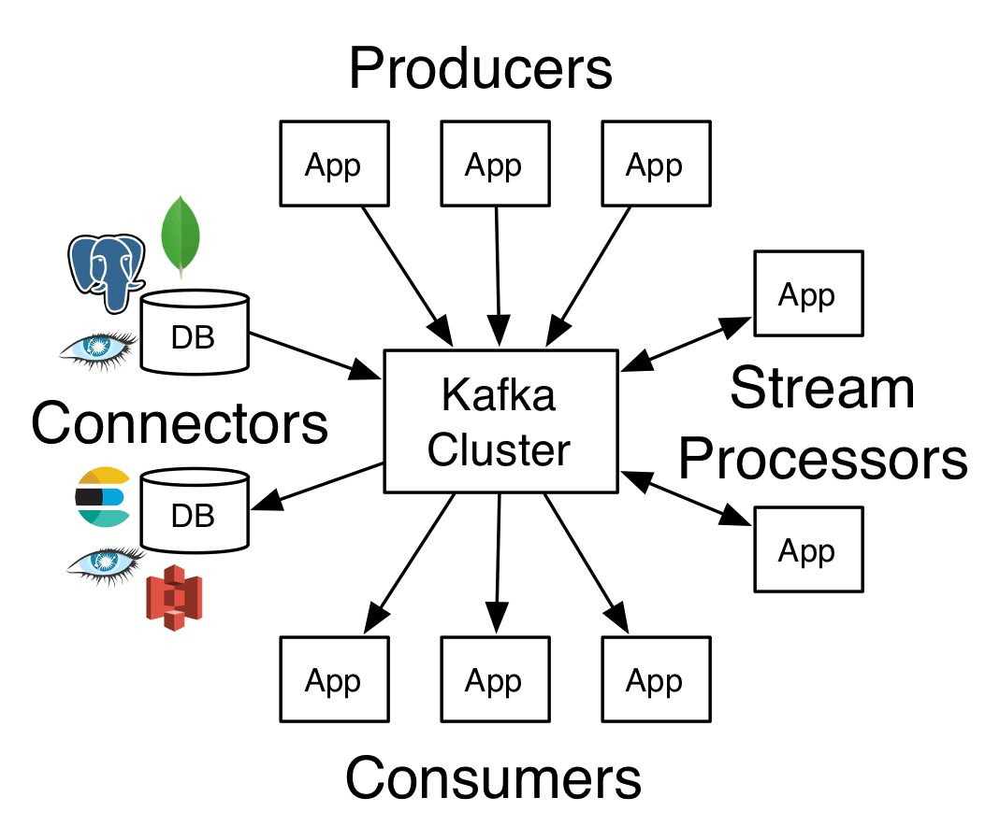
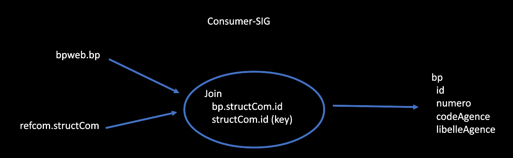
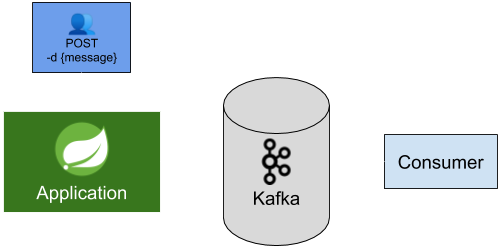
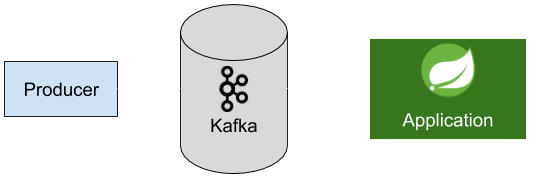
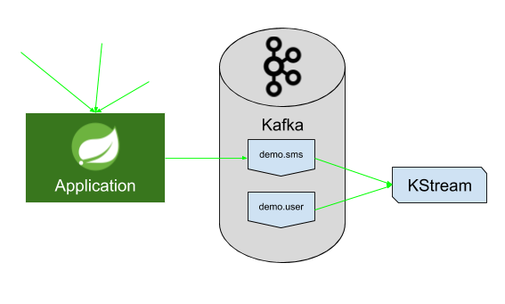
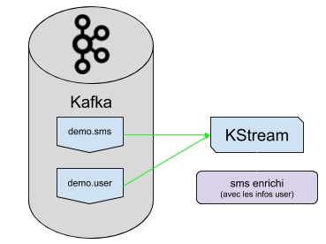

- Développé chez LinkedIn, et maintenu au sein de la fondation Apache depuis 2012.
- Poussé par Confluent, plateforme créée autour de Kafka.
Mais c’est quoi Apache Kafka ?
- Système de stockage de flux de messages (streams of records)
- Asynchrone
- Permet de gérer des gros volumes de données, faible latence
- Tout en assurant une sécurité des données
- Aucun type de message, que des streams
Messages
- Composés d’une valeur, d’une clé, et d’un timestamp
- Sont organisés en catégories appelées topics
Topics / Consumer / Producer

- Les topics ne sont pas modifiables à l’exception de l’ajout de messages à la fin
- Le producer ajoute des messages à la fin des topics de son choix
- Le consumer lit des topics toujours dans l’ordre, c’est-à-dire du plus ancien message au plus récent
Plateforme de streaming distribuée

RIP opt-kakfa
- Nouvelle stratégie SMO : ne plus maintenir de lib "maison"
- Abandon de la lib opt-kafka (utilisation de la lib Apache Kafka) au profit de Spring for Apache Kafka
Spring Apache for Kafka
MAVEN
org.springframework.kafka
spring-kafka
GRADLE
compile 'org.springframework.kafka:spring-kafka'
PROPRIÉTÉS
spring.kafka.bootstrap-servers=${KAFKA_BROKERS_HOST}
développement en local
version: "3"
services:
zookeeper:
image: wurstmeister/zookeeper:3.4.6
container_name: zookeeper
expose:
- "2181"
kafka:
image: wurstmeister/kafka:2.11-2.0.0
container_name: kafka
depends_on:
- zookeeper
ports:
- "9092:9092"
environment:
KAFKA_ADVERTISED_LISTENERS: PLAINTEXT://localhost:9092
KAFKA_LISTENERS: PLAINTEXT://0.0.0.0:9092
KAFKA_ZOOKEEPER_CONNECT: zookeeper:2181
Producer
- Produit des données sur les topics
- Peut attendre un ACK (accusé réception) pour savoir si la donnée a bien été transmise
Configuration
@Configuration
public class KafkaConfiguration {
@Autowired
private KafkaProperties kafkaProperties;
public static final String ENTREPRISE_KAFKA_TOPIC = "isee.entreprise" ;
public static final String ETABLISSEMENT_KAFKA_TOPIC = "isee.etablissement" ;
@Bean
public ProducerFactory<String, String> producerFactory() {
return new DefaultKafkaProducerFactory<>(producerConfigs());
}
@Bean
public Map<String, Object> producerConfigs() {
Map<String, Object> kafkaProps = new HashMap<>();
kafkaProps.put(ProducerConfig.BOOTSTRAP_SERVERS_CONFIG, kafkaProperties.getBootstrapServers());
kafkaProps.put(ProducerConfig.KEY_SERIALIZER_CLASS_CONFIG, StringSerializer.class);
kafkaProps.put(ProducerConfig.VALUE_SERIALIZER_CLASS_CONFIG, StringSerializer.class);
kafkaProps.put(ProducerConfig.ACKS_CONFIG, "all");
kafkaProps.put(ProducerConfig.RETRIES_CONFIG, "1");
kafkaProps.put(ProducerConfig.MAX_IN_FLIGHT_REQUESTS_PER_CONNECTION, "1");
kafkaProps.put(ProducerConfig.MAX_REQUEST_SIZE_CONFIG, "22020096");
return kafkaProps;
}
@Bean
public KafkaTemplate<String, String> kafkaTemplate() {
return new KafkaTemplate<>(producerFactory());
}
@Bean
public KafkaAdmin admin() {
Map<String, Object> configs = new HashMap<>();
configs.put(AdminClientConfig.BOOTSTRAP_SERVERS_CONFIG, kafkaProperties.getBootstrapServers());
return new KafkaAdmin(configs);
}
}
Producer avec ACK
@Service
public class ProducerService {
private static final Logger LOGGER = LoggerFactory.getLogger(ProducerService.class);
private KafkaTemplate<String, String> kafkaTemplate;
public ProducerService(KafkaTemplate<String, String> kafkaTemplate) {
this.kafkaTemplate = kafkaTemplate;
}
public SendResult<String, String> push(String topic, String key, Object data, ObjectMapper objectMapper) {
try {
String json = objectMapper.writeValueAsString(data);
ProducerRecord<String, String> record = new ProducerRecord>(topic, key, json);
LOGGER.debug("Envoi Kafka : topic=[{}], key=[{}], message=[{}]", record.topic(), record.key(), record.value());
return kafkaTemplate.send(record).get();
} catch (JsonProcessingException e) {
throw new RuntimeException(String.format("Erreur de serialization de l'objet %s destiné au topic %s", key, topic), e);
} catch (InterruptedException | ExecutionException e) {
throw new RuntimeException(String.format("Erreur lors de l'envoi de l'objet %s destiné au topic %s", key, topic), e);
}
}
}
Producer mode asynchrone
@Service
public class ProducerService {
private KafkaTemplate<String, String> kafkaTemplate;
public KafkaService(KafkaTemplate<String, String> kafkaTemplate) {
this.kafkaTemplate = kafkaTemplate;
}
// Envoi asynchrone du message
public void pushAsync(MessageDTO messageDTO) {
ObjectMapper objectMapper = new ObjectMapper();
String json = null;
try {
json = objectMapper.writeValueAsString(messageDTO);
String uuid = UUID.randomUUID().toString();
ListenableFuture<SendResult<String, String>> future =
kafkaTemplate.send(messageTopic, json);
String finalJson = json;
future.addCallback(new ListenableFutureCallback<SendResult<String, String>>() {
@Override
public void onSuccess(SendResult<String, String> result) {
System.out.println("Sent message=[" + finalJson +
"] with offset=[" + result.getRecordMetadata().offset() + "]");
}
@Override
public void onFailure(Throwable ex) {
System.out.println("Unable to send message=["
+ finalJson + "] due to : " + ex.getMessage());
}
});
} catch (JsonProcessingException e) {
e.printStackTrace();
}
}
}
Consumer
- Appartient à un consumer group name
- Chaque message publié dans un topic est consommé par un seul consumer d'un group name
@Component
public class KafkaConsumer {
private final Logger log = LoggerFactory.getLogger(KafkaConsumer.class);
@KafkaListener(id = "messageListener", topics = "${opt.kafka.topics.message}", groupId = "messageG1")
public void messageListener(ConsumerRecord<String, String> record) throws JsonProcessingException {
log.info("Reception enregistrement brut de messageListener : [{}]", record);
ObjectMapper objectMapper = new ObjectMapper();
MessageDTO messageDTO = objectMapper.readValue(record.value(), MessageDTO.class);
log.info("Reception message de messageListener : [{}]", messageDTO);
}
}
Consumer Stream
- Permet de développer des unités de traitement de messages au fil de l’eau (streaming).
- Permet de faire des opérations entre topic en temps réel: aggregation / jointure ...
Cas d'utilisation - Consumer-SIG
Cas d'utilisation - Consumer-SIG

Tests
MAVEN
org.springframework.kafka
spring-kafka-test
test
GRADLE
testCompile 'org.springframework.kafka:spring-kafka-test'
Exemple opt-kafka
public class BPWriterTest {
private BPWriter writer;
private KafkaService kafkaService = Mockito.mock(KafkaService.class) ;
@Before
public void init() {
writer = new BPWriter(kafkaService);
}
@Test
public void testBPWriter() {
Mockito.when(kafkaService.push(any(), any())).thenReturn(Mockito.mock(KafkaResult.class));
List<BoitePostaleKafkaDto> dto = new ArrayList<>();
dto.add(new BoitePostaleKafkaDto());
writer.write(dto);
Mockito.verify(kafkaService, Mockito.times(1)).push(any(), any());
}
}
Exemple @EmbeddedKafka
@RunWith(SpringRunner.class)
@EmbeddedKafka(topics = {"${opt.kafka.topics.message}"})
@SpringBootTest(
properties = "spring.kafka.bootstrap-servers=${spring.embedded.kafka.brokers}",
classes = {KafkaService.class, KafkaAutoConfiguration.class})
public class KafkaServiceTest {
@Value(value = "${opt.kafka.topics.message}")
private String messageTopic;
@Autowired
private KafkaService kafkaService;
@SuppressWarnings("SpringJavaInjectionPointsAutowiringInspection")
@Autowired
private EmbeddedKafkaBroker embeddedKafka;
private static final String AUTHOR = "Great Leader";
private static final String BODY = "Dear %{Recipient}, foo, Kind Regards";
private static final Long ID = 12345L;
private static final String RECIPIENT = "World";
private static final String SUBJECT = "Hello world";
@Test
public void push() {
final Consumer<String, String> consumer = buildConsumer();
MessageDTO m = createMessageDTO();
SendResult<String, String> result = kafkaService.push(m);
Assert.assertNotNull(result);
String value = result.getProducerRecord().value();
String key = result.getProducerRecord().key();
embeddedKafka.consumeFromEmbeddedTopics(consumer, messageTopic);
final ConsumerRecord<String, String> record = getSingleRecord(consumer, messageTopic, 10_000);
assertThat(record, hasValue(value));
assertThat(record, hasKey(key));
}
private <K, V> Consumer<K, V> buildConsumer() {
final Map<String, Object> props = KafkaTestUtils.consumerProps("g1", "true", embeddedKafka);
props.put(ConsumerConfig.AUTO_OFFSET_RESET_CONFIG, "earliest");
props.put(ConsumerConfig.KEY_DESERIALIZER_CLASS_CONFIG, StringDeserializer.class);
props.put(ConsumerConfig.VALUE_DESERIALIZER_CLASS_CONFIG, StringDeserializer.class);
final DefaultKafkaConsumerFactory<K, V> consumerFactory = new DefaultKafkaConsumerFactory<>(props);
return consumerFactory.createConsumer();
}
private MessageDTO createMessageDTO() {
MessageDTO m = new MessageDTO();
m.setAuthor(AUTHOR);
m.setBody(BODY);
m.setId(ID);
m.setRecipient(RECIPIENT);
m.setSubject(SUBJECT);
return m;
}
}
Exemple opt-kafka
public class EsiriusTaskTest {
private EsiriusTask task;
private IPortailService portailService;
@Before
public void setUp() {
portailService = mock(IPortailService.class);
Properties streamsConfiguration = new Properties();
streamsConfiguration.put(StreamsConfig.APPLICATION_ID_CONFIG, "APP_ID");
streamsConfiguration.put(StreamsConfig.BOOTSTRAP_SERVERS_CONFIG, "BOOTSTRAP");
ObjectMapper mapper = new ObjectMapper().configure(DeserializationFeature.FAIL_ON_UNKNOWN_PROPERTIES, false);
task = new EsiriusTask(new StreamsConfig(streamsConfiguration), new String[]{BorneKafkaDTO.TOPIC_ESIRIUS}, mapper, portailService);
}
@Test
public void testIsForMe() {
Assert.assertTrue(task.isForMe("id", "{}"));
}
@Test
public void testProcessNonAP1AP2() {
task.process("id", "{\"borne\": {\"siteCode\": \"site31\"}}");
verify(portailService, times(1)).updateBorne(any());
}
@Test
public void testProcessAP1() {
task.process("id", "{\"borne\": {\"siteCode\": \"AP1\"}}");
verify(portailService, times(0)).updateBorne(any());
}
@Test
public void testProcessAP2() {
task.process("id", "{\"borne\": {\"siteCode\": \"AP2\"}}");
verify(portailService, times(0)).updateBorne(any());
}
}
Exemple @EmbeddedKafka
@RunWith(SpringRunner.class)
@EmbeddedKafka(topics = {"${opt.kafka.topics.message}"})
@SpringBootTest(
properties = "spring.kafka.bootstrap-servers=${spring.embedded.kafka.brokers}",
classes = {KafkaConsumer.class, KafkaAutoConfiguration.class})
public class KafkaConsumerTest {
@Autowired
private KafkaConsumer kafkaConsumer;
@Value(value = "${opt.kafka.topics.message}")
private String messageTopic;
@Autowired
private KafkaTemplate<String, String> kafkaTemplate;
@SuppressWarnings("SpringJavaInjectionPointsAutowiringInspection")
@Autowired
private EmbeddedKafkaBroker embeddedKafka;
private static final String AUTHOR = "Great Leader";
private static final String BODY = "Dear %{Recipient}, foo, Kind Regards";
private static final Long ID = 12345L;
private static final String RECIPIENT = "World";
private static final String SUBJECT = "Hello world";
private static final String UID = UUID.randomUUID().toString();
@Test
public void receive() throws JsonProcessingException, InterruptedException {
ObjectMapper objectMapper = new ObjectMapper();
kafkaTemplate = new KafkaTemplate<>(buildProducer());
kafkaTemplate.setDefaultTopic(messageTopic);
MessageDTO m = createMessageDTO();
String json = objectMapper.writeValueAsString(m);
ProducerRecord<String, String> record = new ProducerRecord<>(messageTopic, UID, json);
kafkaTemplate.send(record);
kafkaConsumer.getLatch().await(10000, TimeUnit.MILLISECONDS);
assertThat(kafkaConsumer.getLatch().getCount()).isEqualTo(0);
}
private ProducerFactory<String, String> buildProducer() {
final Map<String, Object> props = KafkaTestUtils.producerProps(embeddedKafka.getBrokersAsString());
props.put(ProducerConfig.KEY_SERIALIZER_CLASS_CONFIG, StringSerializer.class);
props.put(ProducerConfig.VALUE_SERIALIZER_CLASS_CONFIG, StringSerializer.class);
return new DefaultKafkaProducerFactory<>(props);
}
private MessageDTO createMessageDTO() {
MessageDTO m = new MessageDTO();
m.setAuthor(AUTHOR);
m.setBody(BODY);
m.setId(ID);
m.setRecipient(RECIPIENT);
m.setSubject(SUBJECT);
return m;
}
}
Maintenance de Kafka
- Disponibilité
- Méthode d'upgrade
- Maintenance consumers
Prochain Upgrade 2.4.1 > 2.5.0
Problèmatique de la création de nouveaux topics
- Tel que configuré, Kafka laisse le producer créer automatiquement le topic s'il n'existe pas
- Risque de duplication de la donnée
Stratégie
- Consulter le GLIA avant toute création de topic
- A venir : mise en place par le GLIA d'un référenciel des topics dans Confluence
Design for failure
- De plus en plus de clients Kafka vont etre développés
- Kakfa ne stocke que 48h de données
- Le consumer doit savoir quel est le dernier offset traité avec succès.
Projet utilisant org.springframework.kafka
Clients Kafka
- CLIK
- SIG (BPWEB)
- REFCOM
- REFTEL
- OPTISEE
- ...
Démo
- Producer
- Consumer
- KStream
Producer

{
"id": 123465,
"author": "MailBatch1",
"subject": "1er message dans Kafka",
"recipient": "DSI_GLOBAL",
"body": "Incident !"
}
Consumer

log.info("Reception message de messageListener : [{}]", messageDTO);
KStream

# sms
{"phoneNumberEmitter":"112233", "message":"Coucou !", "phoneNumberReceiver":"907256"}
# user
{"phoneNumber":"112233", "firstName":"Hubert", "lastName":"Bonisseur de la Bath"}
KStream

# sms enrichi
{
"firstNameEmitter":"Hubert",
"lastNameEmitter":"Bonisseur de la Bath",
"phoneNumberEmitter":"112233",
"message":"Coucou !",
"phoneNumberReceiver":"907256"
}